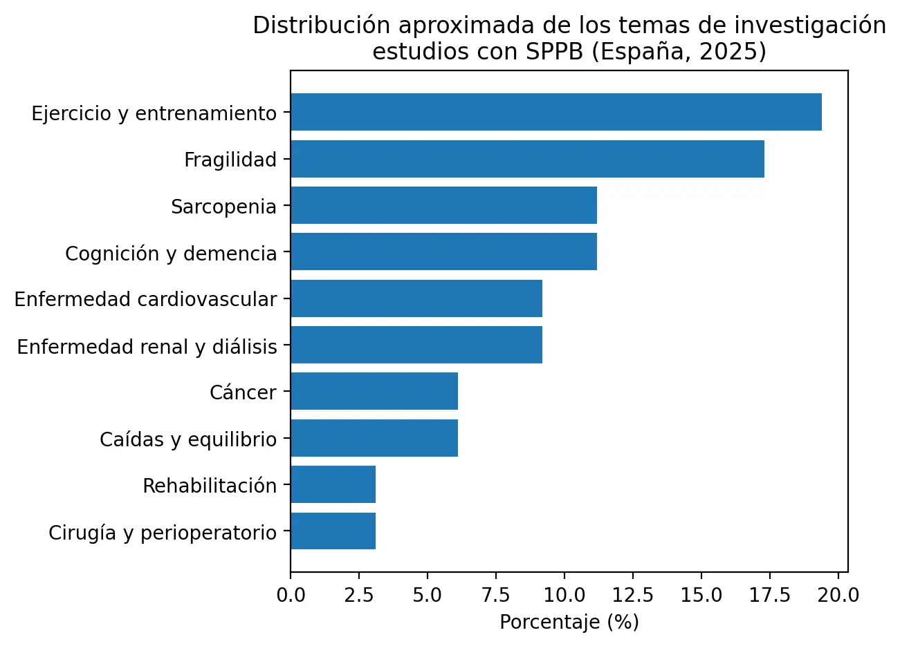

<!DOCTYPE html>
<html lang="en">
<head>
  <meta charset="utf-8"/>
  <meta content="width=device-width, initial-scale=1" name="viewport"/>
  <link rel="icon" href="/favicon.ico" sizes="any">

  <!-- SEO Meta Tags -->
  <meta content="Analysis of Spanish studies from 2025: SPPB as a standard functional indicator in frailty screening, exercise, rehabilitation, and clinical prognosis in hospitals and primary care." name="description"/>
  <meta content="AndanteFit, SPPB, physical function assessment, frailty, screening, Spain, exercise, rehabilitation, primary care, geriatrics, sarcopenia" name="keywords"/>
  <meta content="DYPHI Inc." name="author"/>
  <meta content="index,follow" name="robots"/>

  <!-- Open Graph Tags -->
  <meta content="website" property="og:type"/>
  <meta content="en_US" property="og:locale"/>
  <meta content="AndanteFit" property="og:site_name"/>
  <meta content="SPPB Utilization in Spain 2025 | AndanteFit" property="og:title"/>
  <meta content="SPPB consolidates as the standard functional indicator in clinical research and community prevention programs." property="og:description"/>
  <meta content="/assets/andantefit-logo.png" property="og:image"/>
  <meta content="https://andantefit.com/es/case-studies/2026-02-16-SPPB-Utilization-Spain-ES.html" property="og:url"/>

  <!-- Twitter Card Tags -->
  <meta content="summary_large_image" name="twitter:card"/>
  <meta content="SPPB Utilization in Spain 2025 | AndanteFit" name="twitter:title"/>
  <meta content="Analysis of Spanish studies from 2025: SPPB as a common functional indicator in frailty, exercise, and prognosis." name="twitter:description"/>
  <meta content="/assets/andantefit-logo.png" name="twitter:image"/>

  <!-- Additional SEO Meta Tags -->
  <meta name="google-site-verification" content="" />
  <meta name="theme-color" content="#0d9488" />
  <link rel="canonical" href="https://andantefit.info/case-studies/2026-02-16-SPPB-Utilization-Spain-EN.html" />
  <meta name="application-name" content="AndanteFit" />
  <meta name="apple-mobile-web-app-title" content="AndanteFit" />
  <meta name="mobile-web-app-capable" content="yes" />
  <meta name="apple-mobile-web-app-status-bar-style" content="default" />
  <meta name="format-detection" content="telephone=no" />
  <meta name="language" content="en" />
  <meta name="rating" content="general" />
  <meta name="distribution" content="global" />

  <!-- Medical-specific meta tags -->
  <meta name="medical-subject" content="SPPB, Functional Assessment, Frailty Screening, Therapeutic Exercise" />
  <meta name="target-audience" content="Healthcare Professionals, Physicians, Geriatricians, Physical Therapists" />

  <!-- Resource Hints -->
  <link rel="preconnect" href="https://cdn.tailwindcss.com">
  <link rel="preconnect" href="https://unpkg.com">
  <link rel="dns-prefetch" href="https://www.googletagmanager.com">

  <!-- Schema.org structured data -->
  <script type="application/ld+json">
  {
    "@context": "https://schema.org",
    "@type": "MedicalWebPage",
    "name": "SPPB Utilization in Spain 2025",
    "description": "Analysis of Spanish studies: SPPB as a standard functional indicator",
    "inLanguage": "en",
    "datePublished": "2026-02-16",
    "dateModified": "2026-02-16",
    "publisher": {
      "@type": "Organization",
      "name": "DYPHI Inc.",
      "url": "https://andantefit.com",
      "logo": {
        "@type": "ImageObject",
        "url": "https://andantefit.com/assets/andantefit-logo.png"
      }
    },
    "about": {
      "@type": "MedicalTest",
      "name": "SPPB (Short Physical Performance Battery)"
    },
    "audience": {
      "@type": "MedicalAudience",
      "audienceType": ["Physician", "Geriatrician", "Researcher"]
    }
  }
  </script>

  <title>SPPB Utilization in Spain 2025 | AndanteFit</title>
  <link href="/css/style.css" rel="stylesheet"/>

  <!-- External Libraries -->
  <script src="https://cdn.tailwindcss.com"></script>
  <script crossorigin="" src="https://unpkg.com/react@18/umd/react.production.min.js"></script>
  <script crossorigin="" src="https://unpkg.com/react-dom@18/umd/react-dom.production.min.js"></script>
  <script src="https://unpkg.com/@babel/standalone/babel.min.js"></script>
  <script src="https://unpkg.com/lucide@latest/dist/umd/lucide.min.js"></script>

  <!-- Google Analytics -->
  <script async="" src="https://www.googletagmanager.com/gtag/js?id=G-0L4ENVHFYP"></script>
  <script>
    window.dataLayer = window.dataLayer || [];
    function gtag(){dataLayer.push(arguments);}
    gtag('js', new Date());
    gtag('config', 'G-0L4ENVHFYP');
  </script>

  <style>
    :root {
      --af-primary: #0F4C81;
      --af-secondary: #0d9488;
      --af-accent: #18BFBF;
    }

    html, body { height: 100%; }
    body { margin: 0; background: #e2e8f0; }
    #root { min-height: 100%; }

    .appFont {
      font-family: Pretendard, -apple-system, BlinkMacSystemFont, system-ui, Segoe UI, Roboto, sans-serif;
    }

    body { overflow: auto; }
    .safePad { padding-bottom: env(safe-area-inset-bottom); }

    .sr-only {
      position: absolute;
      width: 1px;
      height: 1px;
      padding: 0;
      margin: -1px;
      overflow: hidden;
      clip: rect(0, 0, 0, 0);
      white-space: nowrap;
      border-width: 0;
    }

    @media print {
      .nav, .footer, .slide-counter {
        display: none;
      }
    }
  </style>
</head>
<body>

<!-- AndanteFit Navigation -->
<div id="navigation-container"></div>

<div class="appFont" id="root"></div>

<!-- React App -->
<script type="text/babel">
  const { useState, useEffect } = React;

  function SlideFrame({ children, index, total }) {
    return (
      <div
        id={`slide-${index}`}
        className="min-h-screen relative"
        role="article"
        aria-label={`Slide ${index + 1} of ${total}`}
      >
        {children}
        <div
          className="slide-counter absolute bottom-6 right-6 bg-slate-800/80 backdrop-blur-sm px-4 py-2 rounded-full text-white text-sm font-medium z-50"
          role="status"
          aria-label={`Slide ${index + 1} of ${total}`}
          aria-live="polite"
        >
          {index + 1} / {total}
        </div>
      </div>
    );
  }

  function SlideLayout({ children, className = "" }) {
    return (
      <div className={`w-full min-h-screen bg-white p-8 sm:p-12 md:p-16 ${className}`}>
        <div className="max-w-6xl mx-auto">
          {children}
        </div>
      </div>
    );
  }

  function LucideIcon({ name, className = "w-6 h-6" }) {
    useEffect(() => {
      if (window.lucide && window.lucide.createIcons) {
        window.lucide.createIcons();
      }
    }, []);
    return <i data-lucide={name} className={className} aria-hidden="true"></i>;
  }

  function BulletPoint({ children, icon = "check-circle" }) {
    return (
      <div className="flex items-start gap-3 mb-4">
        <LucideIcon name={icon} className="w-6 h-6 text-teal-600 flex-shrink-0 mt-1" />
        <p className="text-slate-700 leading-relaxed flex-1">{children}</p>
      </div>
    );
  }

  function App() {
    const slides = [
      // SLIDE 1: Cover with background image
      (
        <div className="w-full min-h-screen relative flex flex-col justify-center items-center overflow-hidden">
          <div
            className="absolute inset-0 bg-cover bg-center"
            style={{
              backgroundImage: 'url(../assets/case-studies/sppb-utilization-spain.webp)',
              filter: 'brightness(0.4)'
            }}
            role="img"
            aria-label="SPPB Utilization in Spain 2025"
          ></div>

          <div className="absolute inset-0 bg-gradient-to-b from-slate-900/70 via-slate-900/50 to-slate-900/70"></div>

          <div className="relative z-10 text-center px-6 max-w-5xl">
            <div className="mb-6">
              <span className="inline-block px-4 py-2 bg-teal-500/20 backdrop-blur-sm border border-teal-400/30 rounded-full text-teal-300 text-sm font-semibold">
                Analysis of Spanish Studies 2025
              </span>
            </div>

            <h1 className="text-4xl sm:text-5xl md:text-6xl font-black text-white mb-6 leading-tight tracking-tight">
              Why the SPPB Has Become the Standard Indicator of Physical Function
            </h1>

            <p className="text-xl sm:text-2xl md:text-3xl text-teal-300 font-semibold mb-8">
              Landscape observed across the healthcare system and community during 2025
            </p>

            <div className="flex flex-col sm:flex-row gap-4 justify-center items-center mt-12">
              <div className="bg-white/10 backdrop-blur-md px-6 py-3 rounded-lg border border-white/20">
                <p className="text-white font-semibold">Hospital Clinical Research</p>
              </div>
              <div className="text-white text-2xl hidden sm:block">+</div>
              <div className="bg-white/10 backdrop-blur-md px-6 py-3 rounded-lg border border-white/20">
                <p className="text-white font-semibold">Community Prevention Programs</p>
              </div>
            </div>
          </div>
        </div>
      ),

      // SLIDE 2: General context
      (
        <SlideLayout>
          <h2 className="text-3xl sm:text-4xl font-black text-slate-900 mb-6">
            General Context
          </h2>
          <p className="text-lg text-slate-600 mb-8">
            SPPB as a common functional outcome across multiple settings
          </p>

          <div className="space-y-6">
            <p className="text-lg text-slate-700 leading-relaxed">
              Based on an analysis of Spanish studies indexed in PubMed and published throughout 2025,
              it is confirmed that the SPPB (Short Physical Performance Battery) has moved beyond being
              a tool limited to a single specialty. In practice, it is being used as a common functional
              outcome across multiple clinical settings and also in community environments.
            </p>

            <div className="bg-teal-50 rounded-xl p-6 border-l-4 border-teal-600">
              <BulletPoint icon="trending-up">
                <strong>European leadership in research:</strong> When applying strict selection criteria
                — first author and single-country studies — Spain emerges as one of the European countries
                with the highest SPPB-based research activity.
              </BulletPoint>
            </div>

            <div className="bg-amber-50 rounded-xl p-6 border-l-4 border-amber-500">
              <BulletPoint icon="activity">
                <strong>Indicator of real clinical practice:</strong> This phenomenon not only reflects
                scientific productivity, but is also a key indicator that the SPPB has consolidated as
                the standard functional indicator in real clinical practice.
              </BulletPoint>
            </div>
          </div>
        </SlideLayout>
      ),

      // SLIDE 3: Two axes of utilization
      (
        <SlideLayout>
          <h2 className="text-3xl sm:text-4xl font-black text-slate-900 mb-6">
            Two Axes of Utilization
          </h2>
          <p className="text-lg text-slate-600 mb-8">
            Simultaneous application in research and prevention
          </p>

          <p className="text-lg text-slate-700 leading-relaxed mb-8">
            The body of studies published in Spain during 2025 shows that the SPPB is being applied
            simultaneously across two major axes:
          </p>

          <div className="grid md:grid-cols-2 gap-6">
            <div className="bg-gradient-to-br from-blue-50 to-blue-100 rounded-xl p-6 border border-blue-200">
              <div className="flex items-center gap-3 mb-4">
                <LucideIcon name="hospital" className="w-8 h-8 text-blue-600" />
                <h3 className="text-xl font-bold text-slate-800">Hospital Clinical Research</h3>
              </div>
              <ul className="space-y-3 text-slate-700">
                <li className="flex items-start gap-2">
                  <LucideIcon name="check" className="w-5 h-5 text-blue-600 flex-shrink-0 mt-0.5" />
                  <span>Multicenter clinical trials</span>
                </li>
                <li className="flex items-start gap-2">
                  <LucideIcon name="check" className="w-5 h-5 text-blue-600 flex-shrink-0 mt-0.5" />
                  <span>Exercise intervention studies</span>
                </li>
                <li className="flex items-start gap-2">
                  <LucideIcon name="check" className="w-5 h-5 text-blue-600 flex-shrink-0 mt-0.5" />
                  <span>Prognostic assessment in cardiology</span>
                </li>
                <li className="flex items-start gap-2">
                  <LucideIcon name="check" className="w-5 h-5 text-blue-600 flex-shrink-0 mt-0.5" />
                  <span>Post-hospitalization rehabilitation</span>
                </li>
              </ul>
            </div>

            <div className="bg-gradient-to-br from-green-50 to-green-100 rounded-xl p-6 border border-green-200">
              <div className="flex items-center gap-3 mb-4">
                <LucideIcon name="users" className="w-8 h-8 text-green-600" />
                <h3 className="text-xl font-bold text-slate-800">Community Prevention Programs</h3>
              </div>
              <ul className="space-y-3 text-slate-700">
                <li className="flex items-start gap-2">
                  <LucideIcon name="check" className="w-5 h-5 text-green-600 flex-shrink-0 mt-0.5" />
                  <span>Frailty prevention programs</span>
                </li>
                <li className="flex items-start gap-2">
                  <LucideIcon name="check" className="w-5 h-5 text-green-600 flex-shrink-0 mt-0.5" />
                  <span>Community multicomponent exercise</span>
                </li>
                <li className="flex items-start gap-2">
                  <LucideIcon name="check" className="w-5 h-5 text-green-600 flex-shrink-0 mt-0.5" />
                  <span>NHS primary care</span>
                </li>
                <li className="flex items-start gap-2">
                  <LucideIcon name="check" className="w-5 h-5 text-green-600 flex-shrink-0 mt-0.5" />
                  <span>Home care services</span>
                </li>
              </ul>
            </div>
          </div>
        </SlideLayout>
      ),

      // SLIDE 4: Distribution of topics (image)
      (
        <SlideLayout>
          <h2 className="text-3xl sm:text-4xl font-black text-slate-900 mb-6">
            Distribution of SPPB Research Topics
          </h2>
          <p className="text-lg text-slate-600 mb-8">
            Spain, 2025
          </p>

          <div className="space-y-6">
            <div className="bg-white rounded-xl overflow-hidden shadow-lg border border-slate-200">
              
            </div>

            <p className="text-sm text-slate-500 text-center italic">
              Source: Own analysis based on Google Scholar, 2025.
            </p>

            <div className="bg-slate-50 rounded-xl p-6">
              <BulletPoint icon="bar-chart">
                <strong>Diversification of applications:</strong> The Google Scholar analysis reveals the
                breadth of topics in which the SPPB is used, from frailty screening to assessment of specific
                interventions across multiple conditions.
              </BulletPoint>
            </div>
          </div>
        </SlideLayout>
      ),

      // SLIDE 5: Frailty screening
      (
        <SlideLayout>
          <h2 className="text-3xl sm:text-4xl font-black text-slate-900 mb-6">
            Frailty Screening and Functional Classification
          </h2>
          <p className="text-lg text-slate-600 mb-8">
            Most frequent use in Spanish studies 2025
          </p>

          <div className="space-y-6">
            <p className="text-lg text-slate-700 leading-relaxed">
              The most frequent use of the SPPB in Spanish studies from 2025 corresponds to frailty
              screening and functional status classification.
            </p>

            <div className="grid md:grid-cols-2 gap-6">
              <div className="bg-blue-50 rounded-xl p-6">
                <div className="flex items-center gap-3 mb-4">
                  <LucideIcon name="flask-conical" className="w-7 h-7 text-blue-600" />
                  <h3 className="text-lg font-bold text-slate-800">Multicenter Clinical Trials</h3>
                </div>
                <p className="text-slate-700 leading-relaxed">
                  The SPPB was used as the primary tool alongside the frailty phenotype to analyze
                  the effects of interventions at the national level.
                </p>
              </div>

              <div className="bg-green-50 rounded-xl p-6">
                <div className="flex items-center gap-3 mb-4">
                  <LucideIcon name="activity" className="w-7 h-7 text-green-600" />
                  <h3 className="text-lg font-bold text-slate-800">Community Exercise Programs</h3>
                </div>
                <p className="text-slate-700 leading-relaxed">
                  In multicomponent programs targeting older adults, the frail group is defined by
                  SPPB score and efficacy is evaluated according to changes in that score.
                </p>
              </div>
            </div>

            <div className="bg-teal-50 rounded-xl p-6 border-l-4 border-teal-600">
              <BulletPoint icon="check-circle">
                <strong>Consolidated pattern:</strong> In Spain, the SPPB is not used solely as a research
                tool, but as a <strong>basic clinical indicator for determining the presence of frailty</strong>.
              </BulletPoint>
            </div>
          </div>
        </SlideLayout>
      ),

      // SLIDE 6: Primary outcome in exercise
      (
        <SlideLayout>
          <h2 className="text-3xl sm:text-4xl font-black text-slate-900 mb-6">
            Primary Outcome in Exercise and Rehabilitation
          </h2>
          <p className="text-lg text-slate-600 mb-8">
            The field with the greatest SPPB presence
          </p>

          <div className="space-y-6">
            <p className="text-lg text-slate-700 leading-relaxed">
              The field with the greatest presence of the SPPB in Spanish articles from 2025 corresponds
              to studies on exercise, rehabilitation, and multicomponent interventions.
            </p>

            <div className="space-y-4">
              <div className="bg-white rounded-xl p-5 border-l-4 border-blue-500 shadow-sm">
                <BulletPoint icon="bed">
                  <strong>Hospitalized older adults:</strong> Changes in SPPB were used as the primary
                  functional outcome in exercise intervention studies.
                </BulletPoint>
              </div>

              <div className="bg-white rounded-xl p-5 border-l-4 border-purple-500 shadow-sm">
                <BulletPoint icon="heart-pulse">
                  <strong>Oncology patients:</strong> Change in SPPB score was established as the primary
                  functional outcome in exercise clinical trials.
                </BulletPoint>
              </div>

              <div className="bg-white rounded-xl p-5 border-l-4 border-green-500 shadow-sm">
                <BulletPoint icon="users">
                  <strong>Community-dwelling older adults:</strong> The SPPB was applied as the key functional
                  indicator in exercise programs targeting community residents.
                </BulletPoint>
              </div>
            </div>

            <div className="bg-amber-50 rounded-xl p-6 border-l-4 border-amber-500">
              <BulletPoint icon="target">
                <strong>Consolidated research practice:</strong> In Spain, the effects of exercise or
                rehabilitation are evaluated using the SPPB, both in hospital and community settings.
              </BulletPoint>
            </div>
          </div>
        </SlideLayout>
      ),

      // SLIDE 7: Prognostic indicator
      (
        <SlideLayout>
          <h2 className="text-3xl sm:text-4xl font-black text-slate-900 mb-6">
            Expansion as a Prognostic Indicator
          </h2>
          <p className="text-lg text-slate-600 mb-8">
            Beyond functional assessment
          </p>

          <div className="space-y-6">
            <p className="text-lg text-slate-700 leading-relaxed">
              The SPPB is not limited to functional assessment; it is also used as an indicator for
              predicting clinical outcomes.
            </p>

            <div className="grid md:grid-cols-3 gap-5">
              <div className="bg-gradient-to-br from-red-50 to-red-100 rounded-xl p-5 border border-red-200">
                <div className="flex items-center gap-2 mb-3">
                  <LucideIcon name="heart" className="w-6 h-6 text-red-600" />
                  <h3 className="text-base font-bold text-slate-800">Heart Failure</h3>
                </div>
                <p className="text-sm text-slate-700">
                  Frailty screening in hospitalized patients
                </p>
              </div>

              <div className="bg-gradient-to-br from-blue-50 to-blue-100 rounded-xl p-5 border border-blue-200">
                <div className="flex items-center gap-2 mb-3">
                  <LucideIcon name="stethoscope" className="w-6 h-6 text-blue-600" />
                  <h3 className="text-base font-bold text-slate-800">TAVI</h3>
                </div>
                <p className="text-sm text-slate-700">
                  Prognosis prediction and readmission risk after valve implantation
                </p>
              </div>

              <div className="bg-gradient-to-br from-purple-50 to-purple-100 rounded-xl p-5 border border-purple-200">
                <div className="flex items-center gap-2 mb-3">
                  <LucideIcon name="activity" className="w-6 h-6 text-purple-600" />
                  <h3 className="text-base font-bold text-slate-800">Rehabilitation</h3>
                </div>
                <p className="text-sm text-slate-700">
                  Prognostic variable for readmissions and post-hospitalization mortality
                </p>
              </div>
            </div>

            <div className="bg-teal-50 rounded-xl p-6 border-l-4 border-teal-600">
              <BulletPoint icon="clipboard-check">
                <strong>Integration into clinical decisions:</strong> The SPPB is being progressively
                integrated into decision-making related to therapeutic strategy, discharge planning,
                and prognosis evaluation.
              </BulletPoint>
            </div>
          </div>
        </SlideLayout>
      ),

      // SLIDE 8: Multiple conditions
      (
        <SlideLayout>
          <h2 className="text-3xl sm:text-4xl font-black text-slate-900 mb-6">
            Common Functional Outcome Across Multiple Conditions
          </h2>
          <p className="text-lg text-slate-600 mb-8">
            Not limited to a specific specialty
          </p>

          <div className="space-y-6">
            <p className="text-lg text-slate-700 leading-relaxed">
              In Spanish articles from 2025, the SPPB does not appear limited to a specific condition,
              but rather as a common functional outcome across multiple clinical areas.
            </p>

            <div className="grid md:grid-cols-2 gap-5">
              <div className="bg-white rounded-xl p-5 border-l-4 border-red-400 shadow-sm">
                <BulletPoint icon="microscope">
                  <strong>Hematological malignancies:</strong> Physical function and quality of life
                </BulletPoint>
              </div>

              <div className="bg-white rounded-xl p-5 border-l-4 border-purple-400 shadow-sm">
                <BulletPoint icon="shield-plus">
                  <strong>HIV in older adults:</strong> Frailty assessment
                </BulletPoint>
              </div>

              <div className="bg-white rounded-xl p-5 border-l-4 border-orange-400 shadow-sm">
                <BulletPoint icon="virus">
                  <strong>Post-COVID-19:</strong> Assessment of functional decline
                </BulletPoint>
              </div>

              <div className="bg-white rounded-xl p-5 border-l-4 border-green-400 shadow-sm">
                <BulletPoint icon="apple">
                  <strong>Nutritional status:</strong> Relationship with functional decline
                </BulletPoint>
              </div>
            </div>

            <div className="bg-slate-50 rounded-xl p-6">
              <BulletPoint icon="network">
                <strong>Standard functional outcome:</strong> The SPPB acts as a cross-cutting indicator
                applicable to diverse clinical situations, regardless of the specific condition.
              </BulletPoint>
            </div>
          </div>
        </SlideLayout>
      ),

      // SLIDE 9: Expansion to community
      (
        <SlideLayout>
          <h2 className="text-3xl sm:text-4xl font-black text-slate-900 mb-6">
            Expansion into Community and Primary Care
          </h2>
          <p className="text-lg text-slate-600 mb-8">
            Beyond the hospital setting
          </p>

          <div className="space-y-6">
            <p className="text-lg text-slate-700 leading-relaxed">
              One of the notable findings in Spanish studies from 2025 is the growing use of the
              SPPB in community settings.
            </p>

            <div className="space-y-4">
              <div className="bg-white rounded-xl p-5 border-l-4 border-green-500 shadow-sm">
                <BulletPoint icon="home">
                  <strong>Community prevention:</strong> Primary functional indicator in frailty prevention
                  and exercise programs for community-dwelling older adults.
                </BulletPoint>
              </div>

              <div className="bg-white rounded-xl p-5 border-l-4 border-blue-500 shadow-sm">
                <BulletPoint icon="users">
                  <strong>Community cohorts:</strong> Analysis of the relationship between pain, nutritional
                  status, and functional decline.
                </BulletPoint>
              </div>

              <div className="bg-white rounded-xl p-5 border-l-4 border-purple-500 shadow-sm">
                <BulletPoint icon="briefcase-medical">
                  <strong>Home care services:</strong> Assessment of functional changes in multicomponent
                  programs for home care recipients.
                </BulletPoint>
              </div>

              <div className="bg-white rounded-xl p-5 border-l-4 border-teal-500 shadow-sm">
                <BulletPoint icon="building-2">
                  <strong>NHS primary care:</strong> Central functional indicator in multicenter studies
                  within the National Health System.
                </BulletPoint>
              </div>
            </div>

            <div className="bg-gradient-to-r from-teal-50 to-blue-50 rounded-xl p-6 border border-teal-200">
              <BulletPoint icon="trending-up">
                <div>
                  <p className="font-bold mb-2">Three areas of expansion:</p>
                  <ul className="space-y-1 ml-6">
                    <li>→ Primary care</li>
                    <li>→ Community prevention programs</li>
                    <li>→ Home care services</li>
                  </ul>
                </div>
              </BulletPoint>
            </div>
          </div>
        </SlideLayout>
      ),

      // SLIDE 10: Key messages
      (
        <SlideLayout>
          <h2 className="text-3xl sm:text-4xl font-black text-slate-900 mb-6">
            Key Messages from the 2025 Studies
          </h2>
          <p className="text-lg text-slate-600 mb-8">
            Four main trends identified
          </p>

          <div className="space-y-5">
            <div className="bg-gradient-to-r from-blue-50 to-blue-100 rounded-xl p-6 border-l-4 border-blue-600">
              <div className="flex items-start gap-4">
                <div className="flex-shrink-0 w-10 h-10 bg-blue-600 text-white rounded-full flex items-center justify-center font-bold text-lg">
                  1
                </div>
                <div>
                  <h3 className="text-lg font-bold text-slate-800 mb-2">Frailty Screening</h3>
                  <p className="text-slate-700">The SPPB is used as the standard indicator for frailty screening.</p>
                </div>
              </div>
            </div>

            <div className="bg-gradient-to-r from-green-50 to-green-100 rounded-xl p-6 border-l-4 border-green-600">
              <div className="flex items-start gap-4">
                <div className="flex-shrink-0 w-10 h-10 bg-green-600 text-white rounded-full flex items-center justify-center font-bold text-lg">
                  2
                </div>
                <div>
                  <h3 className="text-lg font-bold text-slate-800 mb-2">Exercise and Rehabilitation</h3>
                  <p className="text-slate-700">It is the most commonly used functional outcome in exercise and rehabilitation studies.</p>
                </div>
              </div>
            </div>

            <div className="bg-gradient-to-r from-purple-50 to-purple-100 rounded-xl p-6 border-l-4 border-purple-600">
              <div className="flex items-start gap-4">
                <div className="flex-shrink-0 w-10 h-10 bg-purple-600 text-white rounded-full flex items-center justify-center font-bold text-lg">
                  3
                </div>
                <div>
                  <h3 className="text-lg font-bold text-slate-800 mb-2">Prognostic Indicator</h3>
                  <p className="text-slate-700">It is used as a prognostic indicator across various clinical areas.</p>
                </div>
              </div>
            </div>

            <div className="bg-gradient-to-r from-teal-50 to-teal-100 rounded-xl p-6 border-l-4 border-teal-600">
              <div className="flex items-start gap-4">
                <div className="flex-shrink-0 w-10 h-10 bg-teal-600 text-white rounded-full flex items-center justify-center font-bold text-lg">
                  4
                </div>
                <div>
                  <h3 className="text-lg font-bold text-slate-800 mb-2">Common Cross-Cutting Indicator</h3>
                  <p className="text-slate-700">It is applied in hospitals, primary care, and community programs alike.</p>
                </div>
              </div>
            </div>

            <div className="bg-amber-50 rounded-xl p-6 border-l-4 border-amber-500 mt-6">
              <BulletPoint icon="lightbulb">
                <strong>Common functional language:</strong> In Spain, the SPPB has become a common
                functional language that articulates a care model centered on function.
              </BulletPoint>
            </div>
          </div>
        </SlideLayout>
      ),

      // SLIDE 11: Outlook for 2026
      (
        <SlideLayout>
          <h2 className="text-3xl sm:text-4xl font-black text-slate-900 mb-6">
            Outlook from 2026 Onward
          </h2>
          <p className="text-lg text-slate-600 mb-8">
            Two directions of evolution
          </p>

          <div className="space-y-6">
            <p className="text-lg text-slate-700 leading-relaxed">
              The trends observed in 2025 studies indicate that the use of the SPPB in Spain is
              evolving in two parallel directions:
            </p>

            <div className="grid md:grid-cols-2 gap-6">
              <div className="bg-gradient-to-br from-blue-50 to-blue-100 rounded-xl p-6 border border-blue-200">
                <div className="flex items-center gap-3 mb-4">
                  <LucideIcon name="hospital" className="w-8 h-8 text-blue-600" />
                  <h3 className="text-xl font-bold text-slate-800">Hospitals</h3>
                </div>
                <p className="text-slate-700 leading-relaxed">
                  Greater sophistication as a prognostic tool in hospital settings
                </p>
              </div>

              <div className="bg-gradient-to-br from-green-50 to-green-100 rounded-xl p-6 border border-green-200">
                <div className="flex items-center gap-3 mb-4">
                  <LucideIcon name="home" className="w-8 h-8 text-green-600" />
                  <h3 className="text-xl font-bold text-slate-800">Community</h3>
                </div>
                <p className="text-slate-700 leading-relaxed">
                  Expansion in frailty prevention programs in primary care and the community
                </p>
              </div>
            </div>

            <div className="bg-teal-50 rounded-xl p-6 border-l-4 border-teal-600">
              <BulletPoint icon="smartphone">
                <div>
                  <p className="font-bold mb-3">Demand for digital devices for SPPB:</p>
                  <ul className="space-y-2">
                    <li className="flex items-start gap-2">
                      <LucideIcon name="check" className="w-5 h-5 text-teal-600 flex-shrink-0 mt-0.5" />
                      <span>Standardized assessment environments</span>
                    </li>
                    <li className="flex items-start gap-2">
                      <LucideIcon name="check" className="w-5 h-5 text-teal-600 flex-shrink-0 mt-0.5" />
                      <span>Automatic data storage</span>
                    </li>
                    <li className="flex items-start gap-2">
                      <LucideIcon name="check" className="w-5 h-5 text-teal-600 flex-shrink-0 mt-0.5" />
                      <span>Integration with clinical records</span>
                    </li>
                  </ul>
                </div>
              </BulletPoint>
            </div>

            <div className="bg-amber-50 rounded-xl p-6 border-l-4 border-amber-500">
              <BulletPoint icon="arrow-right">
                Compared to manual measurements, demand will increase for digital solutions that enable
                faster, more accurate, and more systematic assessment.
              </BulletPoint>
            </div>
          </div>
        </SlideLayout>
      ),

      // SLIDE 12: Conclusion
      (
        <div className="w-full min-h-screen bg-slate-900 flex flex-col justify-center items-center p-8 sm:p-16 relative overflow-hidden">
          <div className="absolute top-0 right-0 w-[500px] h-[500px] bg-teal-600/10 rounded-full blur-[100px] -mr-40 -mt-40"></div>
          <div className="absolute bottom-0 left-0 w-[500px] h-[500px] bg-blue-600/10 rounded-full blur-[100px] -ml-40 -mb-40"></div>

          <div className="relative z-10 max-w-5xl">
            <h2 className="text-3xl sm:text-4xl md:text-5xl font-black text-white mb-8 text-center">
              Conclusion
            </h2>

            <div className="bg-white/5 backdrop-blur-sm rounded-2xl p-8 border border-white/10 mb-8">
              <p className="text-xl text-slate-200 leading-relaxed mb-6">
                The analysis of Spanish studies indexed in PubMed during 2025 shows that the SPPB is no
                longer a tool limited to a single specialty.
              </p>

              <p className="text-xl text-slate-200 leading-relaxed mb-6">
                It has consolidated as a <span className="text-teal-300 font-bold">common functional indicator</span> for
                frailty screening, assessment of intervention efficacy, and prediction of clinical prognosis,
                with a clear expansion from hospital to community settings.
              </p>
            </div>

            <div className="bg-gradient-to-r from-teal-600/20 to-blue-600/20 backdrop-blur-sm p-8 rounded-xl border border-teal-400/30 mb-12">
              <p className="text-2xl sm:text-3xl font-bold text-teal-300 text-center">
                In the Spanish healthcare system, the question is no longer <span className="text-white">whether</span> to
                use the SPPB, but <span className="text-white">how</span> to measure and manage it more
                quickly and accurately.
              </p>
            </div>

            <div className="text-center pt-8 border-t border-white/20">
              <div className="text-slate-300 text-sm leading-relaxed space-y-2 mb-8">
                <p>
                  This material is provided for informational purposes for healthcare professionals.
                  Diagnostic and treatment decisions for individual patients should be based on the
                  clinical judgment of healthcare providers and the patient's specific condition.
                </p>
              </div>

              <div>
                <p className="text-white text-base font-semibold mb-1">AndanteFit by DYPHI Inc.</p>
                <p className="text-slate-300 text-sm">Automated physical function assessment for clinical practice</p>
              </div>
            </div>
          </div>
        </div>
      ),
    ];

    useEffect(() => {
      if (window.lucide && window.lucide.createIcons) {
        window.lucide.createIcons();
      }
    });

    return (
      <div className="w-full">
        {slides.map((slide, idx) => (
          <SlideFrame key={idx} index={idx} total={slides.length}>
            {slide}
          </SlideFrame>
        ))}
      </div>
    );
  }

  ReactDOM.render(<App />, document.getElementById('root'));
</script>

<!-- Navigation Toggle Script -->
<script>
  document.addEventListener('DOMContentLoaded', function() {
    const navToggle = document.getElementById('navToggle');
    const navMenu = document.getElementById('navMenu');

    if (navToggle && navMenu) {
      navToggle.addEventListener('click', function() {
        navMenu.classList.toggle('active');
      });

      document.addEventListener('click', function(event) {
        const isClickInside = navToggle.contains(event.target) || navMenu.contains(event.target);
        if (!isClickInside && navMenu.classList.contains('active')) {
          navMenu.classList.remove('active');
        }
      });
    }
  });
</script>

<!-- AndanteFit Footer -->
<div data-include="../includes/footer.html"></div>
  <script src="../js/main.js"></script>
  <script src="../js/navigation.js"></script>

</body>
</html>
